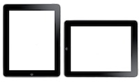

WebClient surfplattegränssnitt
WebClient för surfplattegränssnitt är optimerat för pekskärmar och det bästa valet för surfplattor med Safari på iPad, Chrome på Androidplattor, eller Silk på Kindle Fire. När du loggar in från dessa enheter, blir du automatiskt omdirigerad till surfplattegränssnittet.Surfplattor är inte beroende av JavaScript och är därför kompatibla med gamla eller mobila webbläsarversioner som inte kan hantera den kompletta WebClienten. Alla funktioner kräver endast vänster musknapp och att som standard klicka på webbmoment såsom kryssrutor, knappar och rullgardinsmenyer. Det finns inga snabbmenyer eller popup-fönster.
Tap

Verktygsfältet med ikoner ger dig på ett enkelt sätt åtkomst till alla nödvändiga mejl och groupware-funktioner - uppdelade i en omfattning som motsvarar de färgade ikonerna i den övre menyn.
- E-post
- Adressbok
- Kalender
- Uppgifter
- Anteckningar
- Filer
För att ta emot nya meddelanden, klicka på ikonen för kuvert längst upp på skärmen.

För att börja att skriva ett nytt meddelande, skapa en ny kontakt eller distributionslista, ny händelse eller mötesinbjudan, ny uppgift, ny anteckning, eller ladda upp en ny fil, klicka på motsvarande ikon i verktygsfältet och klicka på den viktiga knappen Ny.
Endast klockslag visas för dagens meddelanden. För äldre e-mejl visas endast datum. Om du vill se både tid och datum, dra musen över datumet, så visas både tid och datum. För att se hela ämnesraden, klicka på knappen detaljer.
Rotera
Horisontell vy visar alla dina favoritmappar i en lista till vänster på sidan. Nuvarande mapp visas med en punkt i fet stil. För att lägga till fler mappar i listan, använd alternativet mapphantering. Vertikal vy drar ihop mapplistan till en rullgardinsmeny till höger. Tryck på knappen med namnet på den aktuella mappen för åtkomst till andra mappalternativ.

Alternativet för mapphantering gör att du får tillgång till att skapa en genväg till en mapp som inte finns listad ännu, och därigenom få snabb tillgång till den. Du kan också att lägga till, byta namn, ta bort mappar eller göra en mapp till huvudmapp.
Dra

Den naturliga riktningen att dra stöds i alla sidvisningar (e-postlistor, kontakter, alla kalendervyer etc.) och gör att du kan gå framåt och bakåt i listorna precis som du gör när du bläddrar igenom sidorna i en bok:
Nästa sida: från höger till vänster
Föregående sida: från vänster till höger (som på bilden ovan)

Som ett alternativ istället för att svepa med fingret, kan du använda sidkontrollerna till höger (upprepas överst och nederst för enklare åtkomst), vilket också visar den nuvarande positionen och det totala antalet sidor.

Du kan dra mellan meddelanden, kontakter, anteckningar etc. Som alternativ finns det pilar för att gå till nästa meddelande eller till ett tidigare efter att du har öppnat ett meddelande.
Snabbsvar

När du inte behöver någon speciell formatering eller leveransalternativ, ger snabbsvar dig exakt det - ett textfält för att svara den ursprunglige avsändaren till det meddelande som du för närvarande ser.
Välj

Detta gäller endast för artiklar på den speciella sidan.
- för att välja alla poster på sidan, använd alla, eller begränsa urvalet till lästa eller olästa
- för att avmarkera dem använd ingen
- använd valet invertera för att välja alla utom dem som har en kryssruta.
Eller använd de individuella kryssrutorna vid varje post i listan för att göra ditt val och sedan utföra olika åtgärder med dem.
För att välja alla meddelanden i en mapp, kan du behöva utöka antalet listade poster i Inställningar - allmänt.
Hantera

Efter att du har valt en eller flera poster (kryssrutan är markerad), kan du gå vidare med att behandla dem genom att använda händelseknapparna (t.ex. radera, och du får en fråga om att bekräfta detta).

Du kan välja andra åtgärder från: rullgardinsmenyn (t.ex. markera som läst, oläst, svartlista).
Sök

Skriv en fras i sök för att söka igenom data som nyss har visats (i e-mejl, ämne/avsändare/mottagare, i kontakt, namn/adresser etc.) eller använd nyckelord för att begränsa sökningen till ett specifika kriterier (t.ex. ämne:kontor). Listan över tillgängliga sökord finns i slutet på denna hjälp.
För att avbryta sökningen, tryck på någon ikon i verktygsfältet, eller ta bort allt in sökfältet och klicka sök.
Bekämpa spam

Använd alternativet karantän i mapplistan för att få tillgång till vit- och svartlista. Här kan du se e-postadresser som alltid tillåts eller avvisas. Du kan ta bort adresserna eller flytta dem från svartlista till vitlista och vice versa.
Gör så här för att lägga till ej begärda kommersiella meddelanden till svartlista:
- i karantänlista, välj mappen för svartlista och klicka på knappen ny post
- i e-mejlvy, markera en kryssruta vid e-postmeddelandet och välj svartlista från åtgärder: meny
- i e-mejlvy, markera en kryssryta vid e-postmeddelandet, klicka flytta och välj
För att vara säker på att få åtkomst till din spammapp från menyn kopiera/flytta, använd alternativet mapphantering och länka spamfoldern och fäst den i listan för favoritmappar.
Hantera mappar

Att länka en mapp betyder att du skapar en länk till denna mapp i listan för dina favoritmappar. En länk gör att du lättare kan få tillgång till dina viktigaste mappar från mapplistan och i alternativet kopiera/flytta. Du kan också ge länken ett beskrivande namn - det behöver inte stämma överens med det aktuella mappnamnet. Då visas detta namn inom parantes i mappträdet.

Det är användbart att öppna en mapp genom att klicka på mappnamnet i vänstra menyn, om du inte hanterar mappen alltför ofta. Mappen öppnas precis som de som är länkade.

Lägg till mapp skapar en ny mapp. Du behöver specificera typ av mapp - antingen du vill lagra mejl, kontakter eller andra typer av poster i den nya mappen.

Byt namn på mapp, byter namnet på mappen. Om det finns en länk till den mappen i vänstra menyn, kommer inte länken att beröras.

Skapa standardmapp kommer att ändras till vart meddelandena tas emot, skickas eller sparas. Standardmappar är alltid tillgängliga från listan med favoritmappar och kan inte namnändras eller tas bort.

Om du tar bort en mapp så kommer allt innehåll i mappen att raderas, (när du klickar "Töm") eller permanent radera allt innehåll i mappen och även mappen själv (när du klickar på "Radera").
Anpassa

Inställningsknappen (som finns mellan Hjälp och ikonen för att logga ut, längst upp i högra hörnet) ger dig möjlighet att anpassa gränssnittet för surfplatta. Olika inställningar finns organiserade i kategorier som visas som mappar (på vänster sida i den höga vyn eller till höger rullgardinsmeny i breda vyn).

- Allmänt - ändra format för datum/tid, specificera antal poster på sidan, aktivera skräppost, automatiskt lägga till mottagare i kontakter, byta lösenord m.m.
- Skriv - att alltid begära läsbekräftelser, alltid lägga skickade meddelanden i skickatmappen, redigera signatur, ändra teckensnitt m.m.
- Personer - lägg till/redigera/radera flera personer (fullständigt namn och e-mejladress som den visas i e-mejlmottagare)
- Autosvar - ett automatgenererat svar med användbara inställningar som, svara en gång till varje mottagare, svara bara inom en speciell tid på dagen eller att inte svara till valda adresser.
- Vidarebefordra - att vidarebefordra en kopia av ett inkommande mejl till någon annan e-postadress.
Avbryt

Använd webbläsarens bakåtknapp för att komma tillbaka till där du var eller avbryt redigeringen av ett meddelande, kontakt, kalender. Alla ändringar du har gjort kommer att gå förlorade. Eller klicka bara på en ikon i verktygsfältet.
Ändra

Använd länkarna till avancerat gränssnitt, mobilt gränssnitt, du kan snabbt växla mellan olika gränssnitt. utan att behöva logga in i igen. Avancerat gränssnitt kanske inte fungerar om du använder äldre webbläsare eller webbläsare för mobiler.
Smart Attach

På Android surfplattor och i datorwebbläsaren kan du ladda upp bilagor till meddelanden. Markera kryssrutan "*Använd SmartAttach", bilagor kommer att lagras på servern (och i dina filer) och levereras via länkar att ladda ner som finns inbäddade i e-postmeddelandet. Detta gör att leverans till användare av mobil blir snabbare och effektivare.
Sök nyckelord

Inte alla nyckelord gäller för alla områden, t.ex. ämnen gäller endast för e-mejl, medan i kalender måste du använda titel: nyckelord. Flera nyckelord är som standard länkade med OCH (du behöver inte ange det) och alla kriterier ska vara uppfyllda, eller du kan använda ELLER och INTE så att följande kriterier kan vara frivilliga eller för att hitta poster som inte uppfyller kriterierna.
från: Används för att specificera avsändare (från:Amy)
till: Används för att specificera en mottagare (till:David)
ämne: Sök för ord i ämnesraden (ämne:Middag)
kopia: Används för att specificera mottagare i kopiefältet: fält
dold kopia: Används för att specificera mottagare i dold kopia: fält
fulltext: Sök hela meddelandetexten (fulltext:test)
prioritet: Sök efter prioritet högst, hög, normal, låg, lägst (prioritet:hög)
efter: Sök efter meddelande som sänts efter en angiven tid (efter:2004/04/16)
före: Sök efter meddelanden som sänts före en angiven tid (före:2004/04/16)
titel: Används för att specificera en posts titel (titel:Test)
beskrivning: Används för att specificera beskrivning eller notering (beskrivning:Test)
namn: Används för att specificera kontaktnamn
e-mejl: Används för att specificera e-mejl
nyckelord: Sök efter poster med en specificerad tag (tag:Affär)
tag: Sök efter poster med en specificerad tag (tag:Affär)
större än: Sök beroende på storlek i kB (större än:1024)
mindre än: Sök beroende på storlek i kB (mindre än:1024)
företag: Sök kontakter mot företag (företag:IceWarp)
avdelning: Sök kontakter mot avdelning (avdelning:IT)
plats: Sök kontakter mot plats (plats:London)